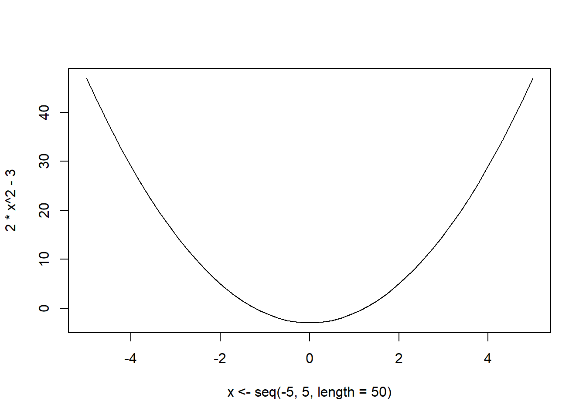
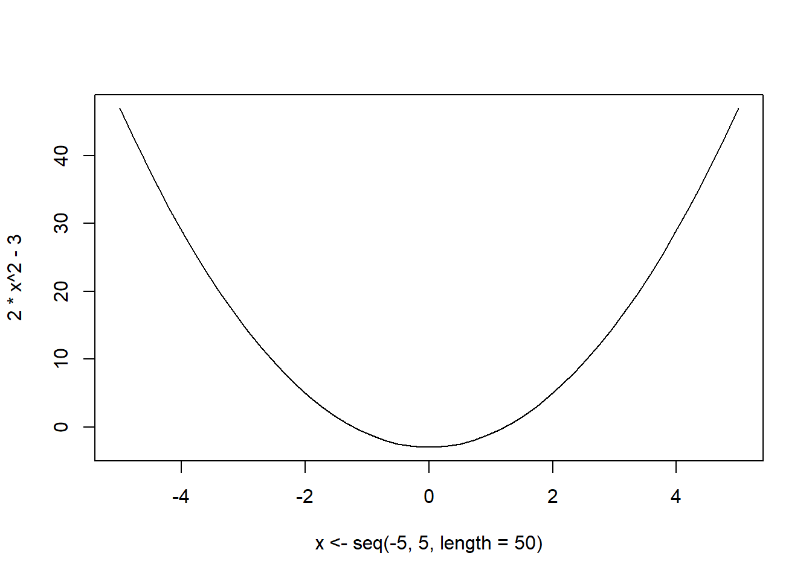
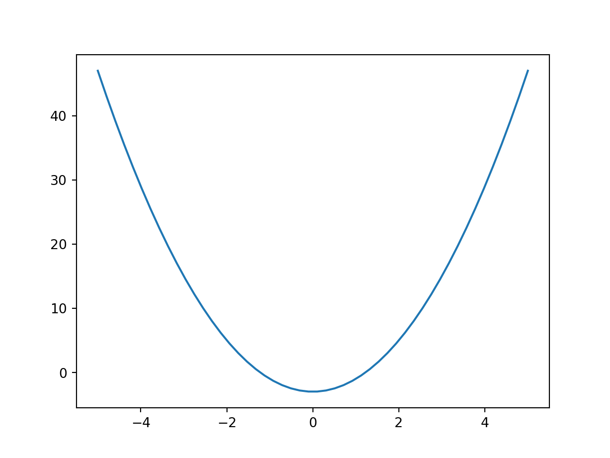

plot(x <- seq(-5,5,length = 50), 2 * x**2 - 3, ty='l')
Previously we looked at root finding methods. Suppose instead of obtaining the root, we want to obtain the optimal point of the function. ie either maximum or minimum. We know that at the optimum, the gradient is 0. Thus for optimization, we opt to obtain the root of the gradient ie \(f'(x) = 0\).
To do this, we use the methods described above but we use \(f'(x)\) as our function of interest.
Therefore the updating methodology becomes:
\[ x_{n+1} = x_n \pm \alpha f'(x) \]
This is called the GRADIENT/STEEPEST DESCENT(ASCENT) ALGORITHM.
ie if we use addition the we talk of ascent and if we use subtraction we talk of descent.
The choice of \(\alpha\) corresponds to the different methods available.
For this method \(\alpha = \frac{1}{f''(x)}\) . If \(f\) is multivariate, then we have \(\alpha = H^{-1}(x)\) where \(H(x) = \nabla^2f(x) = \frac{\partial^2 f(x)}{\partial x \partial x^\top}\) ie 2nd order derivative of the function evaluated at \(x\)
Examples:
Find the minimum of \(f(x) = 2x^2 - 3\)
First we can plot to see how the function looks like
plot(x <- seq(-5,5,length = 50), 2 * x**2 - 3, ty='l')
import matplotlib.pyplot as plt, numpy as np
plt.clf()
plt.plot(x := np.linspace(-5,5), 2 * x**2 - 3)
plt.show()
We can see that the optimum/minimum occurs at \(x=0\). Now we can solve this analytically:
\[ f'(x) = 4x \therefore f'(x) = 0 \implies x=0\\ f''(0) = 4 > 0 \implies x=0 \text{ is a minimum} \]
optimize(\(x)2*x**2 -3, c(-100,100))$minimum
[1] -3.552714e-15
$objective
[1] -3from scipy.optimize import minimize_scalar
minimize_scalar(lambda x: 2*x**2 - 3, [-100,100]) message:
Optimization terminated successfully;
The returned value satisfies the termination criteria
(using xtol = 1.48e-08 )
success: True
fun: -3.0
x: -3.78263270776151e-11
nit: 43
nfev: 46Notice that since the 2nd derivative is constant, using the newton raphson, only one iteration is enough.
x <- -100
x <- x - 4*x/4
x[1] 0x = -100
x -= 4*x/4
x0.0Find the maximum of the following function.
\[ \begin{array}{rl} f(x,y) =2xy+2x-x^2 - 2y^2 &\quad\quad 0<x<4\\ &\quad\quad0.5<y<2.5 \end{array} \]
Solution:
\[ f'(x,y) = \begin{pmatrix}2y + 2 - 2x\\2x - 4y\end{pmatrix}\\ H = \begin{bmatrix}\frac{\partial^2 f}{\partial x^2}&\frac{\partial^2 f}{\partial x\partial y}\\\frac{\partial^2 f}{\partial y\partial x}&\frac{\partial^2f}{\partial y^2}\end{bmatrix} = \begin{bmatrix}-2&2\\2&-4\end{bmatrix}\\ H^{-1} = \frac{1}{4}\begin{bmatrix}-4&-2\\-2&-2\end{bmatrix} = -\frac{1}{2}\begin{bmatrix}2&1\\1&1\end{bmatrix} \]
f <- function(x){
2*x[1]*x[2] + 2*x[1] - x[1]^2 - 2*x[2]^2
}
fprime <- function(x) c(2*x[2]+2-2*x[1], 2*x[1]-4*x[2])
alpha <- -0.5*matrix(c(2,1,1,1),2)
x <- c(-100,-100)
x <- x - alpha%*%fprime(x) #matrix multiplication
x [,1]
[1,] 2
[2,] 1f(x)[1] 2fprime(x)[1] 0 0import numpy as np
def f(x):
return 2*x[0]*x[1] + 2*x[0] - x[0]**2 - 2*x[1]**2
def fprime(x):
return np.r_[2*x[1] + 2 - 2*x[0], 2*x[0]-4*x[1]]
alpha = -0.5 * np.array([[2,1],[1,1]])
x = np.r_[-100.0,-100]
x -= alpha @ fprime(x) #matrix multiplication
xarray([2., 1.])f(x)2.0fprime(x)array([0., 0.])Notice how we only did one evaluation and we obtained the results. How is this possible? That is because the second derivative is free of the parameters, thus we directly converge to the solution. Of course in your implementation, you should make use of loops.
In the example above, the minimum occurs at the point \((2,1)\) with the minimum value of \(2\)
We could easily use the optim function in R to do the same: Note that the function does minimization by default. To do maximization, we negate the function.
optim(c(-100,-100), \(x) -f(x))$par
[1] 2.0028621 0.9999563
$value
[1] -1.999992
$counts
function gradient
69 NA
$convergence
[1] 0
$message
NULLNote that we could also use used fnscale = -1 to indicate that we are doing maximization rather than minimization
optim(c(-100,-100), f, control = list(fnscale = -1))$par
[1] 2.0028621 0.9999563
$value
[1] 1.999992
$counts
function gradient
69 NA
$convergence
[1] 0
$message
NULLWe could easily use the minimize function in python to do the same: Note that the function does minimization by default. To do maximization, we negate the function.
from scipy.optimize import minimize
minimize(lambda x: -f(x), (-100,-100)) message: Optimization terminated successfully.
success: True
status: 0
fun: -1.9999999999948197
x: [ 2.000e+00 1.000e+00]
nit: 4
jac: [ 4.411e-06 -5.543e-06]
hess_inv: [[ 1.001e+00 4.998e-01]
[ 4.998e-01 5.001e-01]]
nfev: 21
njev: 7Sometimes the problem of root finding can be structured as an optimization problem and then optim or optimize functions could be used.
For example given that
\[ \mu = \frac{\alpha}{\beta} \text{ and } \sigma^2 = \frac{\alpha}{\beta^2} \]
and also that \(\mu=5, \sigma^2=10\) solve for \(\alpha, \beta\)
How do we go about this?
We can first combine two into one. ie \(\frac{\alpha}{\beta} - \frac{\alpha}{\beta^2}=-5\) This becomes a root finding problem ie solve for \((\alpha, \beta)\) such that \(f(\alpha,\beta)=0\) . Note that we can transform this into a minimization problem. ie we do not want to go below \(0\). we are interested in a values of \((\alpha,\beta)\) such that the minimum \(f\) is \(0\). Thus we can rewrite \(f\) as:
\(f(\alpha, \beta) = \left|\frac{\alpha}{\beta} - 5\right|+\left|\frac{\alpha}{\beta^2} - 10\right|\)
\(f(\alpha, \beta) = \left(\frac{\alpha}{\beta} - 5\right)^2 + \left( \frac{\alpha}{\beta^2} -10\right)^2\)
The two functions in this case would yield the same results since \(f(\alpha, \beta)\ge0\)
Using absolute
optim(c(1,1), \(par)abs(par[1]/par[2]^2-10) + abs(par[1]/par[2] - 5))$par
[1] 2.5 0.5
$value
[1] 4.070251e-07
$counts
function gradient
135 NA
$convergence
[1] 0
$message
NULLUsing square
optim(c(1,1), \(par)(par[1]/par[2]^2-10)^2 + (par[1]/par[2] - 5)^2)$par
[1] 2.4994315 0.4999561
$value
[1] 7.557839e-07
$counts
function gradient
73 NA
$convergence
[1] 0
$message
NULLUsing square
minimize(lambda par:(par[0]/par[1]**2-10)**2 + (par[0]/par[1] - 5)**2,(1,1)) message: Optimization terminated successfully.
success: True
status: 0
fun: 2.562549482808408e-12
x: [ 2.500e+00 5.000e-01]
nit: 11
jac: [ 8.672e-07 -8.404e-06]
hess_inv: [[ 5.309e-01 5.615e-02]
[ 5.615e-02 6.219e-03]]
nfev: 63
njev: 21From the above, we obtain \(\alpha = 2.5, \beta=0.5\). Notice that although the original problem did not involve minimization, we structured it in a way that allowed us to do minimization.
Recall the function \(f(x) = \log(x) - e^{-x}\), we could do the same to this in order to use the optim or optimize function:
Our goal is to get \(x\) such that \(f(x) = 0\). We could restructure our function such that we square or take absolute \(\mathcal{L} = \left(\log(x) - e^{-x}\right)^2\)
optimize(\(x)(log(x)-exp(-x))^2, lower = 0, upper = 100)$minimum
[1] 1.309787
$objective
[1] 1.676184e-10minimize_scalar(lambda x:(np.log(x)-np.exp(-x))**2,[0,100]) message:
Optimization terminated successfully;
The returned value satisfies the termination criteria
(using xtol = 1.48e-08 )
success: True
fun: 2.6200587055821345e-18
x: 1.3097995873705703
nit: 20
nfev: 23
<string>:1: RuntimeWarning: divide by zero encountered in logFor example if we wanted to solve for \(x\) in \(x^2 e^{3x} +x\log(x) = 10\)
optimise(\(x)(x^2*exp(3*x)+x*log(x) - 10)^2, c(0, 100))$minimum
[1] 0.866875
$objective
[1] 1.182101e-08minimize_scalar(lambda x: (x**2*np.exp(3*x)+x*np.log(x) - 10)**2, (0, 100))
minimize_scalar(lambda x: (x**2*np.exp(3*x)+x*np.log(x) - 10)**2, (0, 100)) message: The algorithm terminated without finding a valid bracket. Consider trying different initial points.
success: False
fun: nan
x: nan
nit: 0
nfev: 3
<string>:1: RuntimeWarning: invalid value encountered in scalar multiply
<string>:1: RuntimeWarning: overflow encountered in expTo remove the warning, we redefine our function. We know that log only works in positive values, therefore we bound the function domain by using method = 'bounded'
minimize_scalar(lambda x:(x*2*np.exp(3*x)+x*np.log(x) - 10)**2, bounds = (0, 100), method = 'bounded') message: Solution found.
success: True
status: 0
fun: 1.683454565099316e-11
x: 0.6758074059806379
nit: 60
nfev: 60Note that in the above, we have to specify the interval in which we perceive the solution to lie in. What if we did not know this? we could use optim function in R or mimimize function in Python.
optim(1, \(x)(x^2*exp(3*x)+x*log(x) - 10)^2)Warning in optim(1, function(x) (x^2 * exp(3 * x) + x * log(x) - 10)^2): one-dimensional optimization by Nelder-Mead is unreliable:
use "Brent" or optimize() directly$par
[1] 0.8668945
$value
[1] 1.381145e-06
$counts
function gradient
26 NA
$convergence
[1] 0
$message
NULLminimize(lambda x: (x**2*np.exp(3*x)+x*np.log(x) - 10)**2, 1,
method = 'Nelder-Mead') message: Optimization terminated successfully.
success: True
status: 0
fun: 1.3811445170301137e-06
x: [ 8.669e-01]
nit: 12
nfev: 24
final_simplex: (array([[ 8.669e-01],
[ 8.668e-01]]), array([ 1.381e-06, 1.726e-05]))Note that function throws a warning regarding the method used. You can learn about the different methods provided in R/python.
Similarly we could have directly solved the problem using uniroot in R or root in Python since this is a root finding problem.
uniroot(\(x)x^2*exp(3*x) + x*log(x)-10, interval = c(1e-4, 100))$root
[1] 0.8668723
$f.root
[1] -3.96713e-05
$iter
[1] 20
$init.it
[1] NA
$estim.prec
[1] 6.747708e-05from scipy.optimize import root_scalar
root_scalar(lambda x: x**2*np.exp(3*x) + x*np.log(x)-10, bracket = (1e-4, 100)) converged: True
flag: converged
function_calls: 23
iterations: 22
root: 0.8668730025669631Why are we learning about transforming root finding problem as a optimization problem? That is because the methods provided in most languages are for optimization rather than root finding. Note that the uniroot function for example can only find roots for a univariate function. No methods have been provided for multivariate functions. We thus have to be skillful on converting the root finding problems to optimization problems. Mostly just rewrite the equation and square it. On the other hand Python provides the root function which can be used for multivariate problems
ie to find the root of \(f(x) = c\) is similar to minimizing \(g(x) = \left(f(x) - c\right)^2\) . We aim at minimizing the square of the difference between the value \(c\) and the value of the function evaluated at \(x\). This difference is called the error. ie \(\epsilon = c - f(x)\) . If the error is 0, then the value of \(x\) that gives us this 0 error is the same value of \(x\) that gives us \(c\) when the function is evaluated at it.
In case we have a multivariate function, we sum all the squared error terms. ie
\[ \sum_{i}\epsilon^2 = \sum_{i}\left(c_i - f(x_i)\right)^2 \]
This is the formula we used when solving for \(\alpha\) and \(\beta\) above. We note that we had two terms and each term had to be equal to something. ie the first term had to be equal to 5 and the second term had to be equal to 10. So we summed the square of the errors of each and minimized that.
Note that we could take the absolute value of each error term. But the absolute value is not differentiable everywhere, and neither is is smooth. We therefore will stick to using the squared errors.
Quiz: What happens when we do not take absolute values/square the difference? Why is that the case?
Lets look at another example:
Suppose we had 2 points ie \((1,2),\quad(2,3)\) we can write the equation of a line:
\[ m = \frac{3-2}{2-1} = 1\implies y = x + 1 \]
Could we find this equation using optimization? The equation of a line is given as \(y = mx +b\)
We would write the problem as:
\[ \begin{pmatrix}2\\3\end{pmatrix}= \begin{pmatrix}1\\2\end{pmatrix}m + \begin{pmatrix}1\\1\end{pmatrix}b \]
Now This is a simultaneous equation that you had solved before:
fn <- function(p){
m <- p[1]
b <- p[2]
(1*m + 1*b - 2)^2 + (2*m + 1*b - 3)^2
}
start <- c(m = 0, b = 0)
optim(start, fn, method = 'BFGS')$par
m b
1 1
$value
[1] 1.93566e-19
$counts
function gradient
14 8
$convergence
[1] 0
$message
NULLdef fn(p):
m = p[0]
b = p[1]
return (1*m + 1*b - 2)**2 + (2*m + 1*b - 3)**2
start =np.r_[0,0]
minimize(fn, start, method = 'BFGS') message: Optimization terminated successfully.
success: True
status: 0
fun: 8.100203955737182e-13
x: [ 1.000e+00 1.000e+00]
nit: 5
jac: [ 4.056e-06 2.537e-06]
hess_inv: [[ 9.996e-01 -1.500e+00]
[-1.500e+00 2.500e+00]]
nfev: 18
njev: 6Using root function
from scipy.optimize import root
root(lambda p: [p[0] + p[1] - 2, 2*p[0] + p[1] - 3], [0,0]) message: The solution converged.
success: True
status: 1
fun: [-2.220e-16 0.000e+00]
x: [ 1.000e+00 1.000e+00]
nfev: 5
fjac: [[-4.472e-01 -8.944e-01]
[ 8.944e-01 -4.472e-01]]
r: [-2.236e+00 -1.342e+00 4.472e-01]
qtf: [-7.804e-12 9.765e-13]From the above, we see that \(m = 1\) and \(b = 1\) hence our equation is \(y = 1x + 1\) which yields the results previously obtained.
What if we have 3 data points, 100 datapoints etc? instead of + we use sum
fn2 <- function(p, X, Y){
m <- p[1]
b <- p[2]
sum((X*m + b - Y)^2)
}
optim(c(0,0), fn2, X = c(1,2),Y = c(2,3), method = 'BFGS')$par
[1] 1 1
$value
[1] 1.93566e-19
$counts
function gradient
14 8
$convergence
[1] 0
$message
NULLdef fn2(p, X, Y):
m = p[0]
b = p[1]
return sum((X*m + b - Y)**2)
minimize(fn2, [0,0], (np.r_[1,2],np.r_[2,3]), method = 'BFGS') message: Optimization terminated successfully.
success: True
status: 0
fun: 8.100203955737182e-13
x: [ 1.000e+00 1.000e+00]
nit: 5
jac: [ 4.056e-06 2.537e-06]
hess_inv: [[ 9.996e-01 -1.500e+00]
[-1.500e+00 2.500e+00]]
nfev: 18
njev: 6Note that we end up with the same results for this dataset. This was a simple dataset and a simple task. Try exercises in this section:
Answer Using R
Note that the function pnorm is the inverse of qnorm ie pnorm(qnorm(x))=x. Now use the optimise function to obtain the inverse of dnorm(x)
Using the gradient descent algorithm, find the best quadratic equation that best fits the dataset below.
x <- 1:10
y <- c(-0.2499211,-4.6645685,-2.6280750,-2.0146818,1.5632500,0.2043376,2.9151158, 4.0967775,6.8184074,12.5449975)Using optim find a quadratic equation that best describes the dataset given in question 2 above. [2]
Try out the problem at stackoverflow
Try out the problem at stackoverflow
Answer Using Python
Note that the function scipy.stats.norm().cdf is the inverse of scipy.stats.norm.ppf ie cdf(ppf(x)) = x. Now use the scipy.optimize.minimize_scalar function to obtain the inverse of scipy.stats.norm().pdf(x)
Using a gradient descent algorithm, find the best quadratic equation that best fits the dataset below
import numpy as np
x = np.arange(10) + 1
y = np.array([-0.2499211,-4.6645685,-2.6280750,-2.0146818,1.5632500,0.2043376,2.9151158, 4.0967775,6.8184074,12.5449975])Using scipy.optimize.minimize find a quadratic equation that best describes the dataset given in question 2 above. [2]
Try out the problem at stackoverflow
Try out the problem at stackoverflow